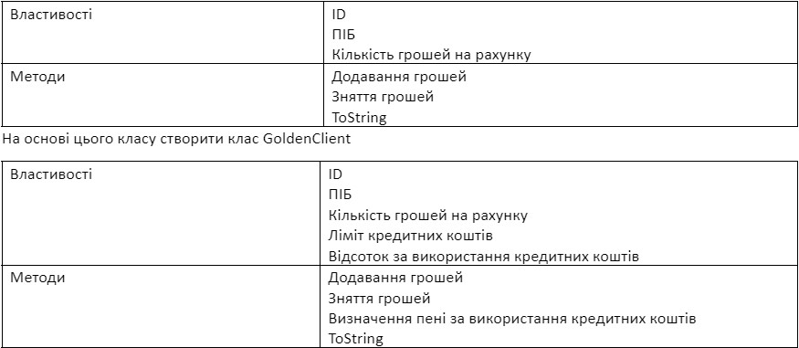
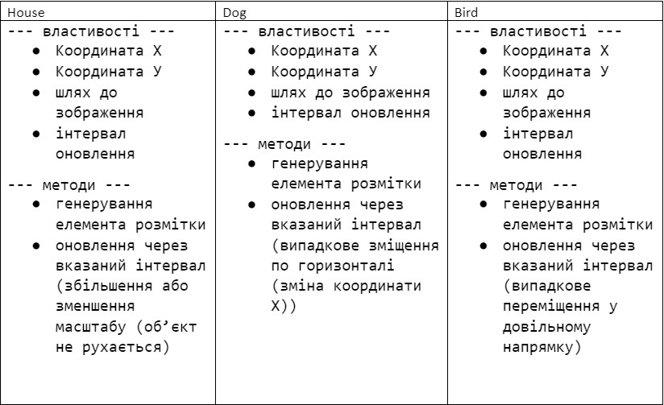

Створити клас Client
Створити клас Bank, у якому зберігається масив клієнтів. Виконати такі операції
- Вивести усіх простих клієнтів;
- Вивести усіх клієнтів GoldenClient;
- Знати сумарну кількість грошей на рахунку;
Розробити Класи
Подумайте яким має бути спільний клас предок.
Користувач задає місяць навчання учня (перевіряти чи є числом, чи від 1 до 12, чи не канікули) та оцінку (перевіряти чи є числом, чи від 1 до 100). Вивести чи зможе він виправити оцінку (якщо оцінка погана і це не останній місяць у семестрі) . Обробку усіх помилок зробити з використанням відповідних класів.